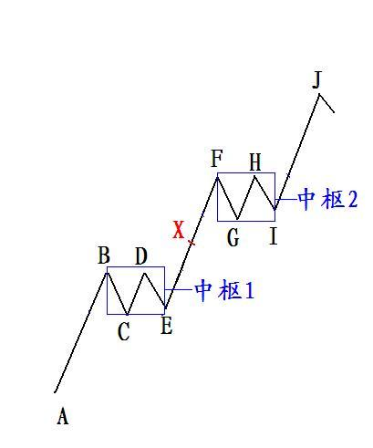
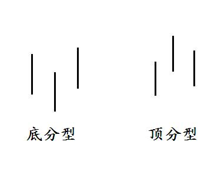
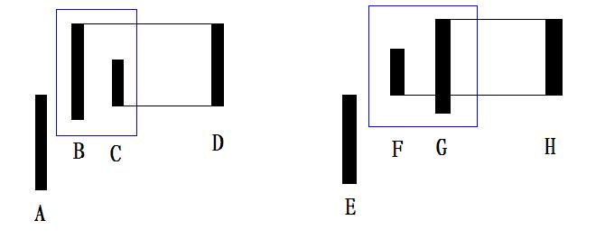
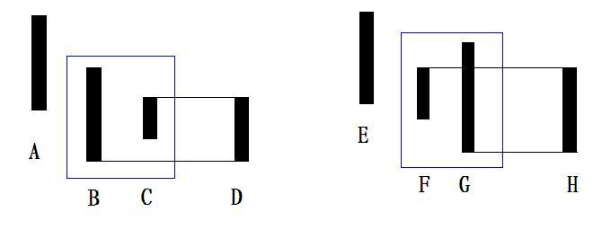
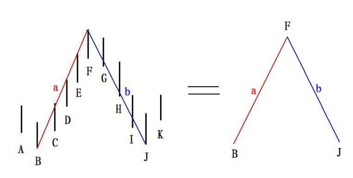

第285篇•《缠论》的分析（3）
谷为陵
要让我“解缠”，我几分钟就可能解完，这是我的一贯作风。彼得·林奇在当富达基金经理时，每天都要听很多手下向他汇报项目情况。他的时间宝贵，他给每个手下立了一个规矩，那就是每个手下每次汇报项目的时间不能超过2分钟。之所以制定这么严苛的条件，是因为彼得·林奇认为，假若一个人不能在2分钟内说明白一件事，就只能证明这个人自己根本不明白这件事。
我的“解缠”方法肯定会与其他人不同，因为我的出发点和其他人不同，所以，我的侧重点也不同。由于我是崇尚实证分析的，且是实战派，我认为评价一种理论的优劣，关键在于其是否符合市场的实际情况，是否好用，凡符合的，好用的，就是好理论，反之，就是狗屎理论，就算是天王老子提出来的也没有用。对于任何理论和学说，我一般不纠缠于某些复杂细节，而更愿意从整体上去把握，这样更能提炼出理论的精髓。精髓一般都是简单的，但又是最有价值的东西。任何一种理论的论证过程都是复杂的，《缠论》也是如此。李彪为了论证《缠论》，不惜动用高等数学方法，让不懂数学的文科生们苦不堪言。但我以为，即使不懂数学对于理解《缠论》也无妨，因为，你只要理解了《缠论》的论点、结论就可以了。
股票投资最难的问题的是什么？就是确认价格趋势。假若你能够知道某一个价格趋势的发展方向，那你就可以推断出未来价格，也就可以设定准确的买卖点，这意味着什么？这意味着你可以确定性地盈利！我以前说过，确定性盈利是股票投资的最高原则。假若真的能做到百分之百地确定性地盈利，那么，地球上的钱都会被你赚光的，这显然是太科幻了，所以，百分之百是不现实的，只要做到70%就可以了，当然，这也是很高的要求，但并非不可实现。不管怎样，尽量提高盈利的确定性，提高操作成功的概率，就是股市英雄们的奋斗目标。
从本质上看，《缠论》就是为了实现确定性盈利这个最高原则而来的。《缠论》猛然看起来很复杂，甚至是很杂乱，但若仔细研究后就会发现，它的整个体系实际上是非常简单明晰的，其核心内容指向也是非常明确的，那就是确认趋势，具体来说，就是通过对价格趋势的形成、延续与转折进行确认，以最终确定三类买卖点。
《缠论》将趋势按级别分为三类：笔趋势、有一个中枢的趋势、有两个（以上）同向中枢的大趋势，这三类趋势如下图所示：

上图是一个最简化的上升趋势模型，从该模型可以演化出所有更复杂的上升形态。我现在来解释一下几个概念：
笔：AB、BC、CD……IJ都属于笔。
中枢：中枢1由BC、CD、DE三笔组成，中枢2由FG、GH、HI三笔组成。
趋势：AB、EF、IJ属于笔（级别）趋势；AX为含有一个中枢的趋势；AJ为含有2个同向中枢的大趋势.所谓同向，就是方向相同，如，中枢1在A点上方，而中枢2在中枢1的上方，所以，AJ的价格趋势就是向上的。这也是《缠论》对于趋势的定义。
买点：第一类买点A、第二类买点C与G、第三类买点E与I 。
最简单的趋势就是一笔，比如，AB、EF、IJ这三笔。如果趋势就是简单的一笔，那么，判断买卖点就非常容易了。比如，AB这一笔，A就是买点，B就是卖点，就是这么简单。
那么，具体来说，什么是笔呢？《缠论》对于笔是这样定义的：“两个相邻的顶和底之间构成一笔，所谓笔，就是顶和底之间的其他波动，都可以忽略不算，但注意，一定是相邻的顶和底，隔了几个就不是了。在实际分析中，都必须要求顶和底之间都至少有一K线当成一笔的最基本要求。”（教你炒股票62：分型、笔与线段）。原来，要知道笔是什么，还必须先知道“顶”和“底”，那么，什么是“顶”和“底”呢？这里所指的“顶”和“底”，是特指顶分型的最高点与底分型的最低点，这又涉及到两个最基本的概念：底分型与顶分型。
所谓底分型与顶分型，就是三根K线只看K线高低点分别按照下图方式排列的。其中，K线适合任何周期，且不分阳线阴线，只看K线高低点。

《缠论》的底分型定义是：“第二K线低点是相邻三K线低点中最低的，而高点也是相邻三K线高点中最低的”
。《缠论》的顶分型定义是：“第二K线高点是相邻三K线高点中最高的，而低点也是相邻三K线低点中最高的，本ID给一个定义叫顶分型。”
（教你炒股票62：分型、笔与线段）。
但在实际图形中，
K线的组合往往不会这样简单，会出现复杂形态，在这种情况下该如何处理呢？《缠论》认为，只要K线之间形成包含关系，就可以运用结合律将K线合并。那么，结合律又是怎么回事呢？《缠论》提出了这样的操作方法：“这种包含关系，也就是一K线的高低点全在另一K线的范围里，这种情况下，可以这样处理，在向上时，把两K线的最高点当高点，而两K线低点中的较高者当成低点，这样就把两K线合并成一新的K线；反之，当向下时，把两K线的最低点当低点，而两K线高点中的较低者当成高点，这样就把两K线合并成一新的K线。经过这样的处理，所有K线图都可以处理成没有包含关系的图形。”
以下是向上的结合律的情况：

以下是向下的结合律的情况：

说到这里，我们就知道什么是笔了。《缠论》指出：“所以，上升的一笔，由结合律，就一定是底分型+上升K线+顶分型；下降的一笔，就是顶分型+下降K线+底分型。”。其中，上升K线或者下降K线至少是一根，多者不限。以下就是上升的一笔和下降的一笔的标准形态：

可见，在引入了笔的概念后，就将看起来较为复杂的K线组合形态，变成了简单的一笔、两笔这样非常直观的线段，看着这样的线段，价格趋势不是变得无比清晰了吗？所以，《缠论》不是将简单的问题复杂化，恰恰相反，它是将原本复杂的K线形态与组合问题，变得简单化了。
（未完待续）